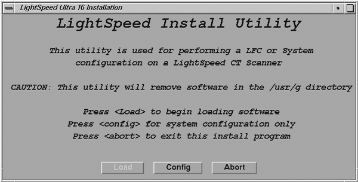
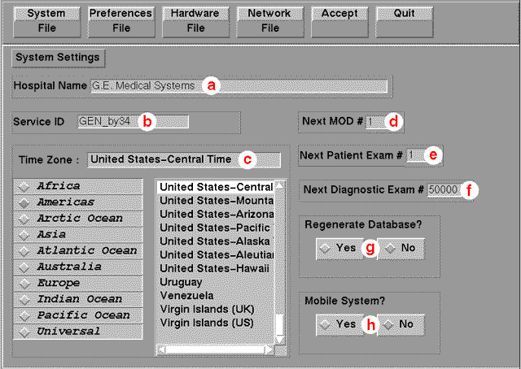
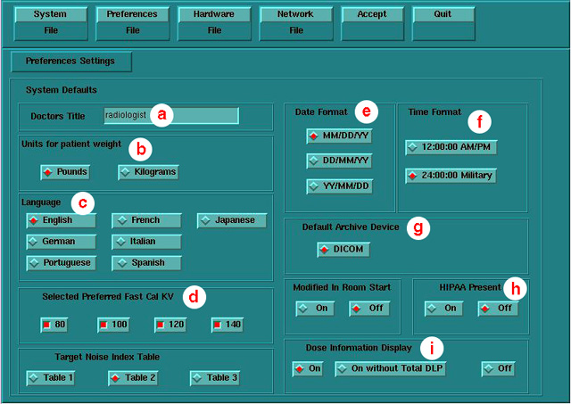
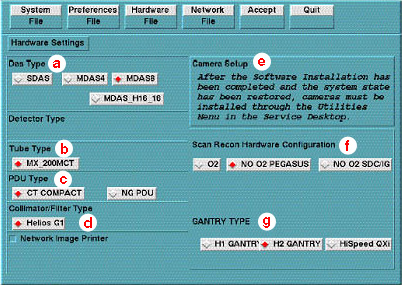
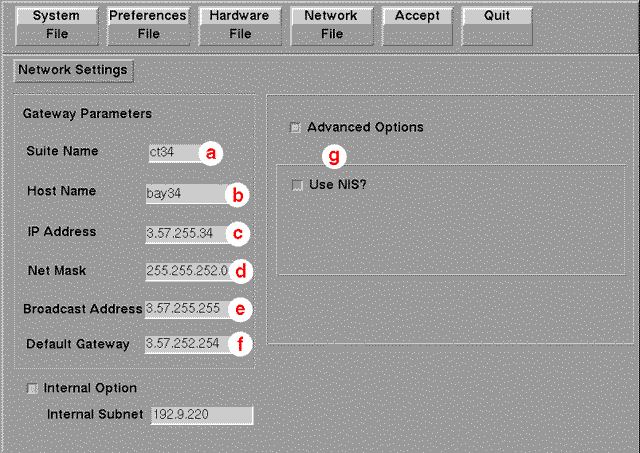

Operating Documentation
Direction 2378260-800, Rev# 10
GOC3 Service Methods (Adv)
Operating Documentation |
| Required Persons | Preliminary Reqs | Procedure | Finalization |
|---|---|---|---|
| 1 | Timing Not Applicable | Timing Not Applicable |
The procedures in this module (listed below) apply to LightSpeed 16 Slice MDAS GRE systems and should be used ONLY when loading the applicable software package.
Step - Shut Down Application
Step - Check/Set Date and Time
Step - Reconfig the OC
Step - Applications Start-Up
| Last Revised: | 10 August 2005 |
| Condition | Reference | Eff |
|---|---|---|
Understand the conventions used in this publication. | - |
If Applications is currently running, you must shut down system applications.
Click on the [Service Desktop] icon. 
On the desktop tool-bar select [Utilities] icon. 
Select [Applications Shutdown] (to bring down applications only).
Open a Shell window.
Type: su - <ENTER> at the prompt.
Type the root (super user) password: #bigguy
If the time and date is already correct, skip this procedure. Otherwise, you must set the date and time on the Host Computer. With Application Software down, enter the time and date if needed.
If Applications are up, select the [Service Desktop] icon, [Utilities] , then [Application Shutdown] .
Open a Unix shell.
Type: su <space> - <Enter>.
Type the root password: #bigguy and press <Enter>.
Type: setdate mmddhhmmyyyy (e.g.: setdate 050409002003) and press <Enter>.
| NOTE: | Alternate method exists: You may also type: setdate<Enter> and you will be prompted through the individual entries. Where: mm is month (01-12) dd is day (01-31) hh is hour (00-23) mm is minutes (00-59) yyyy is year (1980-2030) |
The setdate program will set and display the time and date for on the Host Computer. Verify the date and time on the Host Computer is correct.
To exit the root session, Type: exit <Enter>.
Slide the computer tray back into position, properly secure it, and replace the console’s front cover.
On the following screens, make the necessary changes, pressing the corresponding button at the top of the screen to move from screen to screen. When done, either press the [Accept] button to start the reconfiguration process, or press [Quit] , to exit without changing the system configuration.
While the reconfiguration is in process, messages are displayed in a shell window, which closes when reconfiguration is complete. The reconfiguration output is logged to the following file:
/var/adm/install.log.YYYYMMDDWWWHHMMSS
Where:
YYYYMMDDWWWHHMMSS is the Date/Time that the reconfiguration was started.
To view the file, type: more /var/adm/install.log.YYYYMMDDWWWHHMMSS
It is possible to abort the reconfiguration while entering information on the reconfiguration screens. Simply press the [Quit] button at the top of the screen. There is NO safe way to abort the reconfiguration AFTER pressing the [Accept] button. If the entries made in the screens were incorrect, DO NOT try to stop the reconfiguration, instead wait for it to complete, and rerun reconfig, entering the correct parameters.
Change directory to scripts:
Type: cd /usr/g/scripts<Enter> at the prompt.
Launch the Install utility:
Type: reconfig [Enter] at the prompt.
The OC displays the Install Utility Window as shown in Illustration 1.
Illustration 1: Install Utility Window

| NOTE: | The following pages show the screens that are used to change the configuration of the system. These screens are the same as those used for the Software Configuration during Load From Cold. The actual screens will vary depending on the current configuration of your system. |
Click on the [Config] button.
The OC displays the System Configuration - System Settings screen, as shown in Illustration 2.
Illustration 2: System Settings Screen

Configure System Settings:
Hospital Name ( Illustration 2, item a) configures the name that will show up on images produced by this scanner.
Example: ST MARYS HOSPITAL
Service ID ( Illustration 2, item b) is issued by the Service organization.
Example: 262785CT2 (no spaces)
Select the Time Zone for the site.
Use the scroll-bar at the bottom of the time-zone selection list to view the entire description of the time-zone you are about to select, to ensure that you are selecting the correct time-zone for your location.
If the time-zone of your location is listed, select one of the universal times instead. In this case, automatic changes for daylight savings time will not take effect. Refer to the Software Installation Procedures manual, if additional information regarding time-zone setting & selection is required.
Next MOD # Not Currently Implemented.
Next Patient Exam # configures the next Exam number the scan user interface will use. At initial system installation, type: 1
Next Diagnostic Exam # Not Currently Implemented.
Regenerate Database determines whether the Scan Database will be regenerated during reconfiguration. Select [NO] .
| NOTE: | If [Yes] is selected, then all scan data
will be deleted on the Scan Data Disk. To avoid accidental regen, [No] is
selected by default each time reconfig is run. Regenerating the Scan Database
destroys all the scan and calibration files on the Scan Data Disk. Make sure
that all images have been reconstructed before regenerating the Scan Database. This procedure is normally only needed when a Scan Data Disk is replaced or reformatted. Refer to the Software Installation Procedures manual, if you require more information regarding Scan Database Regeneration. |
Mobile System Select to tell the software if this CT is in a mobile environment or not.
Select the [Preferences] button to display the Preference Settings screen ( Illustration 3).
Illustration 3: Preferences Setup Screen

Configure Preferences Settings (Refer to Illustration 3):
Doctors Title - Enter the title for the Doctor. (eg. radiologist)
Units for Patient Weight - Tells the software whether pounds or kilograms are being used.
Language configures the language to be displayed on the Application screens ( [ENGLISH] , [GERMAN] , [PORTUGESE] , [FRENCH] , [ITALIAN] , [SPANISH] , [JAPANESE] ).
Preferred Fast Cal KV configures the preferred kV that the Fast Cal Routine will calibrate (80, 100, 120, 140 in the Selected Preferred Fast Cal KV field). The default selections are 120 and 140.
| NOTE: | These kVs should include all kVs that the site uses for patient scanning. Deselecting All Preferred FastCal KVs is the same as selecting ALL the Preferred FastCal KVs. |
Date Format configures the format in which the date will be displayed on the images.
Time Format configures the format in which the time will be displayed on the images
Default Archive Device is [DICOM] .
HIPAA Present - Consult with the customer. Unless they specify that they want to use this feature, this field should be set to [OFF] .
Select the site preferred Dose Information Display option for the site to use in monitoring calculated Patient Dose:
Select [ON] (full CTDiw Display),
Select [On without Total DLP] (no Dose Length Product Display), or
Select [Off] (no CTDIw Display).
Select the hardware button to display the Hardware Settings Screen ( Illustration 4).
Illustration 4: Hardware Settings Screen

Configure Hardware Settings (Refer to Illustration 4):
DAS Type configures which DAS the software should expect.
Tube Type configures which X-Ray Tube the software should expect.
PDU Type configures which PDU the software should expect.
Collimator/Filter Type configures which Collimator/Filter the software should expect. Presently, LightSpeed 4.X systems only support [Helios G1] .
Select Network Image Printer ONLY IF the site plans to use a network connected postscript printer (such as Codonics printers) with this system.
| NOTE: | A “PRINT SERVER” IS NOT SUPPORTED (i.e., a computer with an attached printer); a Network Image Printer (which is supported) is a printer attached directly to the network. |
Camera Setup
| NOTE: | Camera Setup is not performed using Reconfig. It is performed from the Service Desktop, once Applications have been started. See “DICOM Filming Devices Setup” in DICOM Setup. |
Scan Recon Hardware Configuration selects whether the 02 is present.
Gantry Type selects the type of Gantry connected to this console.
Select the [Network] button to display the Network Settings Screen as shown in Illustration 5.
Illustration 5: Network Settings Screen

Configure Network Settings (Refer to Illustration 5):
Select the Suite Name: add your name here (Example: CT55).
| NOTE: | The Suite Name must start with a letter, followed by 3 alphanumeric characters. Total must be four characters long. The name of the OC interface is <Suite Name>_oc within the scanner's subnet. It is suggested that you choose CT01 as its name, unless a different Suite Name is required. |
Select the Host Name: add your host name here (Example: BAY55).
| NOTE: | The Host Name identifies the hostname and AE
Title of the scanner. It:
|
Set the IP Address: add your address here (Example: 3.57.255.55).
Set the Netmask: add your address here (Example: 255.255.252.0).
Set the Broadcast Address: add your address here (Example: 3.57.255.255).
Set the Default Gateway: add your address here (Example: 3.57.252.254).
Ensure the [Advanced Options] and [Use NIS] boxes are checked.
If there is an Internal Option - Internal Subnet setting, do not change the default settings.
Enter Domain Name: add your name here (Example: CTSYSTEMS.)
Enter the IP Address of Internal Server: add your address here (Example: 3.70.56.18).
Click the [Accept] button at the right corner of the User Interface. The following message appears: Please make sure the CT Application SW is in the drive - the system will be rebooted. Ignore this message.
| NOTE: | Do not remove the LightSpeed Apps CD-ROM from the HP Host Computer until instructed to do so. |
As the system reboots, the following Winterm window message appears: Starting LFW procedure (~13 minutes to load). A shell Installation screen appears and the application software starts loading.
When the system prompts you to reboot (after approximately 13 minutes), answer [Yes] . The system is going down for reboot NOW.
After approximately three (3) minutes, a pink pop up window appears, stating CT Software Auto-Start Disabled. In this box select: [OK] .
Press the button on the DVD-ROM drive to remove the LightSpeed Apps SW CD-ROM from the HP Host Computer.
Open the Console shell window and type: st <Enter>.
The applications desktop appears on the monitor.
No finalization required.